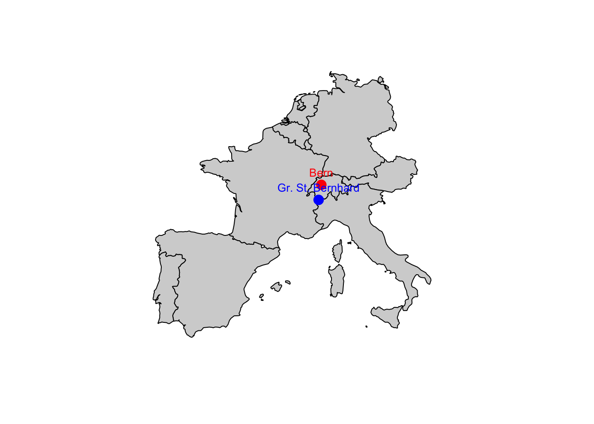

install.packages("ggplot2")4 Packages und Libraries
In R gibt es ähnlich wie in Python und anderen Programmiersprachen die Möglichkeit, zusätzliche Funktionalitäten durch das Einbinden von Packages und Libraries zu nutzen. In R werden diese durch den Befehl library() eingebunden.
Die Pakete müssen einmalig installiert werden und können dann immer am Anfang eines Skripts oder Notebooks geladen werden.
4.1 Pakete installieren
Pakete können mit der Funktion install.packages() installiert werden. Zum Beispiel:
Um Skripte und Notebooks portabel zu halten, ist es sinnvoll, die Installation von fehlenden Paketen am Anfang des Skripts oder Notebooks zu platzieren.
if (!require("ggplot2")) {
install.packages("ggplot2")
}4.2 Pakete laden
Pakete können mit der Funktion library() geladen werden. Zum Beispiel:
library(ggplot2)Die meisten Pakete haben eine Vielzahl von Funktionen, die genutzt werden können. Es ist ratsam, die Dokumentation des Pakets zu lesen, um die verfügbaren Funktionen und deren Anwendung zu verstehen. Die Dokumentation eines Pakets kann mit dem Befehl ? aufgerufen werden. Zum Beispiel:
?ggplot24.3 Häufig genutzte Pakete
Einige der am häufigsten genutzten Pakete in R sind:
ggplot2: Ein Paket zur Erstellung von ansprechenden und aussagekräftigen Grafiken.dplyr: Ein Paket zur Datenmanipulation und -aggregation.tidyr: Ein Paket zur Datenbereinigung und -umformung.readr: Ein Paket zur Einlesung von Daten aus verschiedenen Dateiformaten.stringr: Ein Paket zur Arbeit mit Zeichenketten.lubridate: Ein Paket zur Arbeit mit Datum und Uhrzeit.caret: Ein Paket zur Erstellung von Modellen und zur Modellauswertung.tidyverse: Ein Paket, das eine Sammlung von Paketen für die Datenanalyse in R bereitstellt.
Es gibt viele weitere Pakete, die für spezifische Anwendungen und Analysen entwickelt wurden. Es ist ratsam, die Dokumentation der Pakete zu lesen, um die verfügbaren Funktionen und deren Anwendung zu verstehen.
4.4 Beispiel: Einbinden des ggplot2 Pakets
An einem einfachen Beispiel sehen wir, wie mit Hilfe der Pakete ggplot2 und plotly ein interaktives Diagramm erstellt werden kann.
# Bibliotheken laden
library(ggplot2)
library(plotly)
# Daten für den Plot vorbereiten
# Konvertiere die Spalte Saison in einen einfacheren Faktor für die Darstellung
meteodaten$Saison <- factor(meteodaten$Saison,
levels = c("Fruehling(MAM)",
"Sommer(JJA)",
"Herbst(SON)",
"Winter(DJF)"),
labels = c("Frühling",
"Sommer",
"Herbst",
"Winter"))
# Plot mit ggplot2 erstellen
gg <- ggplot(meteodaten, aes(x = Jahr,
y = Bern_Mitteltemperatur,
color = Saison)) +
geom_line(linewidth = 1.2) + # Linienbreite anpassen
geom_hline(yintercept = 0,
linetype = "dashed") + # Horizontale Linie bei 0
labs(title = "Saisonale Durchschnittstemperaturen in Bern",
x = "Jahr",
y = "Durchschnittstemperatur in °C") +
theme_minimal() + # Minimalistisches Theme für einen klaren Look
scale_color_manual(values = c("Frühling" = "green",
"Sommer" = "red",
"Herbst" = "orange",
"Winter" = "blue")) + # Farben anpassen
theme(plot.title = element_text(hjust = 0.5,
size = 16)) # Zentriere Titel und passe die Schriftgröße an
# Plot interaktiv machen mit plotly
gg_interaktiv <- ggplotly(gg)
# Interaktiver Plot anzeigen
gg_interaktivInteraktives Diagramm der saisonalen Durchschnittstemperaturen in Bern
Übungen
3.4 R als GIS Ersatz
- Installiert das Paket
mapsund ladet es in R (z.B.library(maps)) Findet die x,y-Koordinaten von Bern und dem Gr. S. Bernhard heraus.
Lösung
library(maps)
# Koordinaten für Bern und Grosser St. Bernhard
bern_coords <- c(7.4474, 46.9481)
gross_bernhard_coords <- c(7.1761, 45.8689)- Versucht eine Europakarte herzustellen und Bern und Gr. Bernhard als Punkte auf die Karte zu plotten und die Punkte mit Stationsnamen zu versehen
Lösung
# Erstelle eine Europakarte
map("world",
xlim = c(-10, 20),
ylim = c(35, 55),
fill = TRUE,
col = "lightgray")
# Punkte auf der Karte plotten
points(bern_coords[1],
bern_coords[2],
col = "red",
pch = 19,
cex = 1.5)
points(gross_bernhard_coords[1],
gross_bernhard_coords[2],
col = "blue",
pch = 19,
cex = 1.5)
# Text hinzufügen
text(bern_coords[1],
bern_coords[2],
labels = "Bern",
pos = 3,
cex = 0.8,
col = "red")
text(gross_bernhard_coords[1],
gross_bernhard_coords[2],
labels = "Gr. St. Bernhard",
pos = 3,
cex = 0.8,
col = "blue")